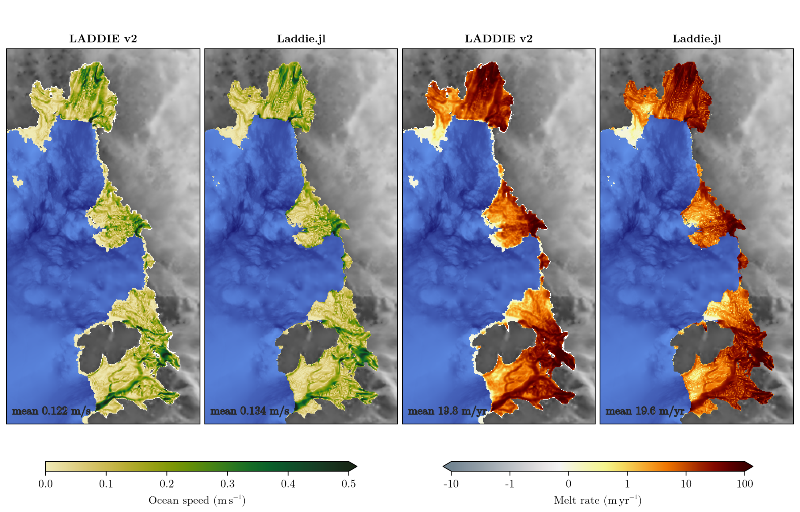

Amundsen Sea Embayment: reproducing LADDIE v2 (Lambert et al., 2026)
Lambert et al. (2026) run LADDIE v2 over the Amundsen Sea Embayment at 1 km for 20 days (their Sec. 3.1 and Fig. 3). This page repeats that run with Laddie.jl, with the settings that are closest to v2, and compares the result with v2's own output. What still differs is the discretisation: v2 uses a triangular mesh and forward–backward Runge–Kutta time stepping, while Laddie.jl uses a C-grid and leapfrog.
The run takes two minutes on 8 CPU threads: start Julia with julia -t 8 and pin each thread to its own core with ThreadPinning.jl. On an 8-core workstation (Xeon W-2245) a time step takes 24 ms on one thread and 5.8 ms on eight pinned threads. Unpinned, it takes 6.2 ms. Use one thread per physical core: hyperthreads do not help, and 16 threads on those 8 cores take 10 ms per step (25 ms pinned). Laddie.jl leaves pinning to the user, because the right choice depends on the machine (under SLURM, for instance, use pinthreads(:affinitymask)).
The documentation build does not execute this code, because it needs BedMachine v3 and the paper's model output on disk.
using Laddie
using ThreadPinning
using KernelAbstractions
using NCDatasets
using Printf
using Statistics
using CairoMakie
pinthreads(:cores) # one thread per physical core
threadinfo() # prints where each thread is pinned
FT = Float64
backend = CPU()
const BEDMACHINE = "/home/jan/pCloudDrive/pCloudSync_Jantarctica/PhD/Projects/Isostasy/" *
"GRDMIP/GRDMIP-Paleo/preprocessing/topography/data/BedMachine/BedMachineAntarctica-v3.nc"
const V2_OUTPUT = joinpath(pkgdir(Laddie), "papers", "lambert-2026", "data", "ASE",
"laddie_output_grid.nc")
const ASSETS = joinpath(pkgdir(Laddie), "docs", "src", "assets")Geometry
BedMachine v3 over v2's domain, with ice thinner than 2 m removed and averaged in 2 × 2 blocks onto v2's 1 km output grid. Floating ice is then found by flotation, using UFEMISM's densities. The first 35 rows are left out: they hold a separate ice shelf that the southern edge of the domain cuts through.
const X_BOUNDS, Y_BOUNDS = (-1699250.0, -1460250.0), (-739250.0, -240250.0)
const J_MIN = 36 # first row kept on v2's 1 km grid
rho_ice, rho_sw = 917.0, 1027.0
block(A) = [mean(A[2i-1:2i, 2j-1:2j]) for i in 1:size(A, 1)÷2, j in 1:size(A, 2)÷2]
midpoints(c) = [(c[2k-1] + c[2k]) / 2 for k in 1:length(c)÷2]
ds = Dataset(BEDMACHINE)
ix = findall(v -> X_BOUNDS[1] <= v <= X_BOUNDS[2], ds["x"][:])
iy = reverse(findall(v -> Y_BOUNDS[1] <= v <= Y_BOUNDS[2], ds["y"][:]))[2(J_MIN-1)+1:end]
x = midpoints(Float64.(ds["x"][ix])) # BedMachine's y is descending, hence `reverse`
y = midpoints(Float64.(ds["y"][iy]))
bed = block(Float64.(ds["bed"][ix, iy]))
thickness = block(ifelse.(ds["thickness"][ix, iy] .< 2, 0.0, Float64.(ds["thickness"][ix, iy])))
close(ds)
dx = dy = x[2] - x[1] # 1000 m
ring(c) = [c[1] - (c[2] - c[1]); c; c[end] + (c[2] - c[1])]
grid = Grid(build_laddie_mask(bed, thickness; rho_ice, rho_sw),
ice_base_depth(bed, thickness; rho_ice, rho_sw), dx, dy;
x = ring(x), y = ring(y), z_bed = bed_elevation(bed),
domain_cropping = NoDomainCropping(), backend, FT)Forcing
The TANH profile has its thermocline at 450 m depth with a 100 m scale depth. It runs from the surface freezing point to +1 °C at depth. As on the ice-shelf gaps page, v2 samples it every 100 m down to 1500 m, and so does Laddie.jl here.
l1, l2 = -5.73e-2, 8.32e-2
alpha, beta = 3.733e-5, 7.843e-4
S0, T_deep, z_tcl, z_scale, drho0 = 34.0, 1.0, -450.0, 100.0, 0.01
z = -collect(0.0:100.0:1500.0)
T0 = l1 * S0 + l2
Tz = @. T_deep + (T0 - T_deep) * (1 + tanh((z - z_tcl) / z_scale)) / 2
Sz = @. S0 + alpha * (Tz - T0) / beta + drho0 * sqrt(abs(z)) / (beta * rho_sw)
forcing = CavityForcing(OceanForcing1D(Tz, Sz, z; FT), PrescribedIceForcing(-25.0))Parameters
The values come from v2's ASE.cfg. The ice-shelf gaps page explains the v2-specific options. One of them is new here: UpstreamMomentumAdvection, the donor-cell momentum advection that v2 uses. It carries no momentum across walls, so the walls need A_h = 20 for stability; v2's own value is 1.
params = Params(; FT,
melting = TurbulentGamTMelting(13.8, 2432.0, 1.95e-6),
entrainment = LambertEntrainment(2.5),
lateral_viscosity = NonlinearLateralViscosity(1.0),
momentum_advection = UpstreamMomentumAdvection(),
front_pressure = TruncatedDepthGradient(),
convection_scheme = ClampDensity(0.005),
coriolis = CoriolisParameter0D(-1.37e-4),
A_h = 20.0, K_h = 4.0,
C_d = 2.5e-3, C_d_top = 1.1e-3,
D_init = 1.0, D_min = 1.0, dT_init = 0.0, dS_init = -0.1,
u_tide = 0.01, v_cut = 1.4, max_detrainment = 1e-3,
alpha, beta, l1, l2,
rho0_seawater = rho_sw,
seconds_per_year = 365 * 86400.0,
)
boundary = BoundaryConditions(;
grounding_line = NoSlipGL(), land = NoSlipLand(),
open_ocean = ZeroGradientInflow(), wall_advection = NoWallAdvection(),
)Run
The run lasts 20 days, as in the paper. The time step is an AdaptiveDt that settles near 115 s. The fields shown below are the average over the last day.
The CFL target of 0.3 matters. At 0.4 the time step grows to 160 s, and around day 8 the layer under Thwaites blows up locally, with its mean thickness rising from 20 m to hundreds of metres. It never recovers, and how far it goes depends on round-off: the CPU and the GPU end up with different results. At 0.3 the two backends agree to four digits.
model = Model(grid; forcing, params, boundary, gradient = PyGradient())
sim = Simulation(model; dt = 30.0, nu = 0.8, tstep = AdaptiveDt(cfl_target = 0.3),
output = OutputConfig(; name = "ASE", saveday = 1.0, restday = 20.0,
resultdir = joinpath(pkgdir(Laddie), "docs", "output")))
run!(sim; days = 20)Laddie.jl and LADDIE v2 side by side
Both runs are on v2's 1 km grid. v2's gridded output has no mask, so a cell counts as shelf if the ice there floats and the layer exists. Floating alone is not enough: remapping the mesh leaves a strip along the domain edge that floats but has no layer.
last_slice(ds, v) = Float64.(coalesce.(ds[v][:, :, end], NaN))
v2 = NCDataset(V2_OUTPUT) do ds
rows = J_MIN:ds.dim["y"]
shelf = (coalesce.(ds["Hi"][:, rows], 0.0) .> 0) .& (coalesce.(ds["TAF"][:, rows], 0.0) .< 0) .&
(coalesce.(ds["H_lad"][:, rows, end], 0.0) .> 0)
speed = hypot.(last_slice(ds, "U_lad"), last_slice(ds, "V_lad"))[:, rows]
melt = last_slice(ds, "melt")[:, rows] .* params.seconds_per_year # v2 writes m/s
(; speed = ifelse.(shelf, speed, NaN), melt = ifelse.(shelf, melt, NaN))
end
jl = NCDataset(joinpath(sim.output.resultdir, "ASE", "output.nc")) do ds
shelf = ds["mask"][:, :] .== 3
speed = hypot.(last_slice(ds, "Ut"), last_slice(ds, "Vt"))
(; speed = ifelse.(shelf, speed, NaN), melt = ifelse.(shelf, last_slice(ds, "melt"), NaN))
endThe paper's colour maps. Grounded ice (grey, by thickness) and the open-ocean bathymetry (blue) fill the rest of each panel.
hexmap(s) = cgrad(Makie.to_color.(String.(split(s))))
melt_cmap = hexmap("#728592 #8694a0 #96a1aa #acb3ba #c0c4c9 #d5d5d7 #e8e5e6 #f5f5f5 #f5f5ce
#f5f5ac #f5f58d #f5dd63 #f5bc42 #f5981e #ee7400 #cb5100 #a32900 #850a00 #5e0000 #3c0000")
speed_cmap = hexmap("#f1ebb7 #e8dd9e #dfcf82 #d5c367 #c9b84e #b9ae35 #a6a621 #929f11 #7c9706
#669007 #508811 #3b7f1a #257622 #146c27 #0a612a #0d552b #134a29 #173e25 #18321e #172716")
mask = build_laddie_mask(bed, thickness; rho_ice, rho_sw)[2:end-1, 2:end-1]
grounded = ifelse.((mask .== 1) .| (mask .== 2), thickness, NaN)
ocean = ifelse.(mask .== 0, bed, NaN)
xkm, ykm = x ./ 1e3, y ./ 1e3
fmean(A) = mean(filter(isfinite, A))
set_theme!(theme_latexfonts())
fig = Figure(size = (1000, 640), figure_padding = 8)
panels = [(speed_cmap, :speed, "LADDIE v2", v2), (speed_cmap, :speed, "Laddie.jl", jl),
(melt_cmap, :melt, "LADDIE v2", v2), (melt_cmap, :melt, "Laddie.jl", jl)]
local hm_speed, hm_melt
for (k, (cmap, field, name, r)) in enumerate(panels)
ax = Axis(fig[1, k]; title = name, aspect = DataAspect())
hidedecorations!(ax)
heatmap!(ax, xkm, ykm, grounded; colormap = [:gray25, :gray85])
heatmap!(ax, xkm, ykm, ocean; colormap = [:midnightblue, :cornflowerblue])
A = getproperty(r, field)
if field === :speed
global hm_speed = heatmap!(ax, xkm, ykm, A; colormap = cmap, colorrange = (0, 0.5),
highclip = cmap[end])
label = @sprintf("mean %.3f m/s", fmean(A))
else
global hm_melt = heatmap!(ax, xkm, ykm, A; colormap = cmap, colorrange = (-10, 100),
colorscale = Makie.Symlog10(1), lowclip = cmap[1], highclip = cmap[end])
label = @sprintf("mean %.1f m/yr", fmean(A))
end
text!(ax, 0.03, 0.02; text = label, space = :relative, align = (:left, :bottom),
fontsize = 14, color = :white, strokecolor = :gray15, strokewidth = 1)
end
Colorbar(fig[2, 1:2], hm_speed; vertical = false, flipaxis = false, width = Relative(0.8),
label = L"Ocean speed $\mathrm{(m \, s^{-1})}$")
Colorbar(fig[2, 3:4], hm_melt; vertical = false, flipaxis = false, width = Relative(0.8),
ticks = ([-10, -1, 0, 1, 10, 100], ["-10", "-1", "0", "1", "10", "100"]),
label = L"Melt rate $\mathrm{(m \, yr^{-1})}$")
colgap!(fig.layout, 6)
resize_to_layout!(fig)
save(joinpath(ASSETS, "lambert-ase.png"), fig; px_per_unit = 2)
By ice shelf, using the boxes the paper labels in its Fig. 3:
regions = ("Pine Island" => ((-1693.5, -1553.5), (-369.0, -246.5)),
"Thwaites" => ((-1608.5, -1508.5), (-489.0, -376.5)),
"Crosson–Dotson" => ((-1611.0, -1481.0), (-701.5, -532.5)))
inbox((bx, by)) = (bx[1] .<= xkm .<= bx[2]) .& (by[1] .<= ykm' .<= by[2])
gt_per_yr(melt) = sum(filter(isfinite, melt)) * dx * dy * 1000.0 / 1e12
for (name, sel) in ["ASE (all)" => trues(size(mask)); [n => inbox(b) for (n, b) in regions]]
@printf("%-15s v2 %6.2f m/yr %6.1f Gt/yr | Laddie.jl %6.2f m/yr %6.1f Gt/yr\n", name,
fmean(v2.melt[sel]), gt_per_yr(v2.melt[sel]), fmean(jl.melt[sel]), gt_per_yr(jl.melt[sel]))
end| ice shelf | v2 (m/yr) | Laddie.jl (m/yr) | v2 (Gt/yr) | Laddie.jl (Gt/yr) |
|---|---|---|---|---|
| ASE (all) | 19.78 | 19.58 | 392.8 | 374.4 (−5 %) |
| Pine Island | 21.25 | 19.88 | 133.3 | 123.4 (−7 %) |
| Thwaites | 14.12 | 15.84 | 51.1 | 53.1 (+4 %) |
| Crosson–Dotson | 21.52 | 20.61 | 203.5 | 192.0 (−6 %) |
Laddie.jl's layer flows about 10 % faster than v2's. Its mean melt rate is 1 % lower, and its total melt 5 % lower, because its ice shelf is slightly smaller. It has the same features as v2's: the boundary currents along the Pine Island and Crosson–Dotson grounding lines, and the strongest melt close to them. The differences are smaller than the 5–15 % by which the paper's v1 and v2 differ in melt.
To regenerate the figure, run LADDIE_DOCS_ASE=true julia -t 8 --project=docs docs/make.jl.
This page was generated using Literate.jl.